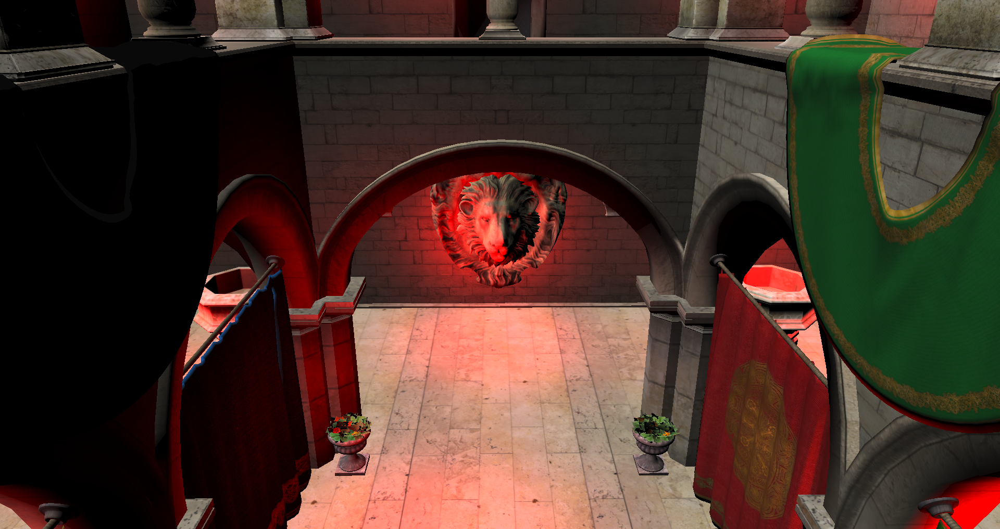
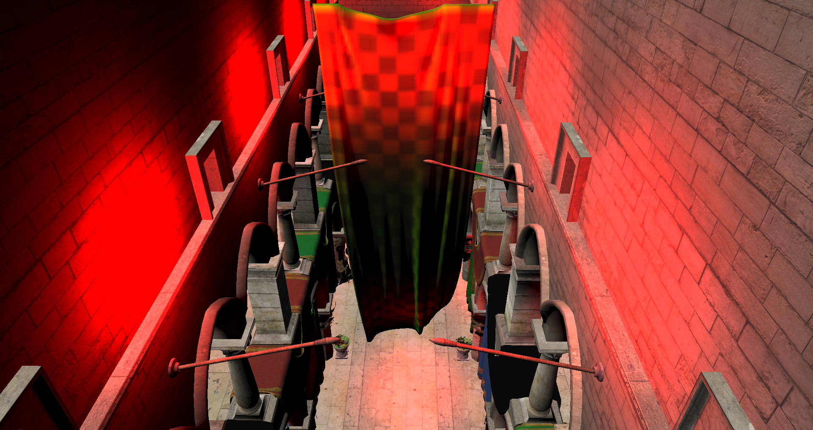

Blender
For this project I wanted to be able to change and create different scenes for rapid testing of data. Because I was already familiar with Blender I decided to use this for the creation of the scenes.
In the beginning I was thinking about what 3D modelling format I could use for import into my engine. I was not really satisfied with the available formats because some of them were adding a lot of unnecessary information or the import would be time consuming. So instead I decided to create binary files for the raw mesh data and a scene description as plain text.
I wrote a python script which would perform the needed steps to export the scene. Especially I wanted to be able to remove duplicated vertices and support smooth and flat shaded objects. Also I needed to convert the models in the correct coordinate system because Blender seems to be the only program which uses a coordinate system with the z axis up.
Later in the development I added support for exporting the materials as well. Also the correct diffuse and normal textures were exported.
Tiled Forward Plus Rendering
The idea behind this rendering method is to divide the image into smaller rectangular tiles and perform lighting only where it contributes to the scene. To realize this I computed frustums per tile and used a compute shader for culling of point lights against the tile frustum. The resulting lights are stored inside a structured buffer which is used in the rendering to determine from which lights an object receives light. To further reduce the amount of possible lights I calculated the min and max depth values per tile.
